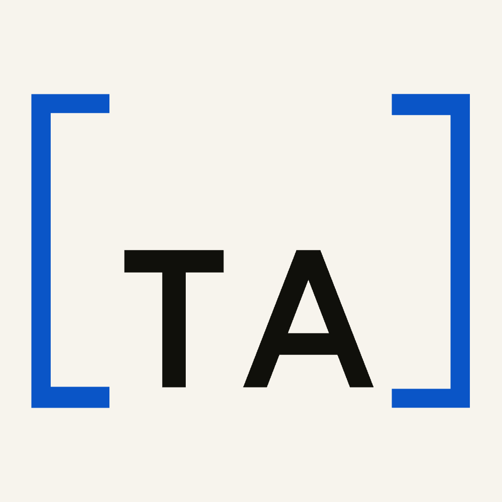
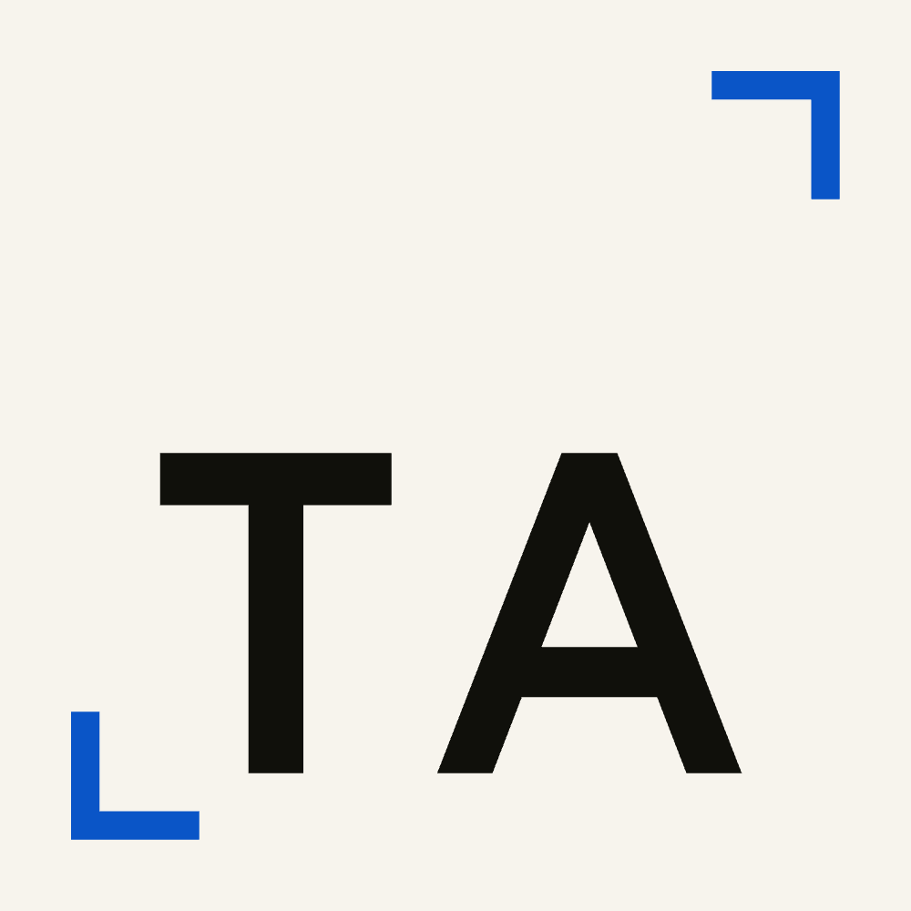
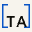
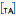
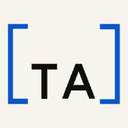
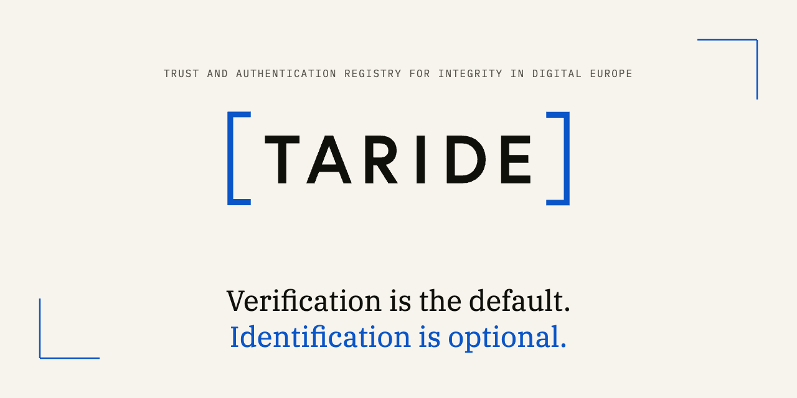
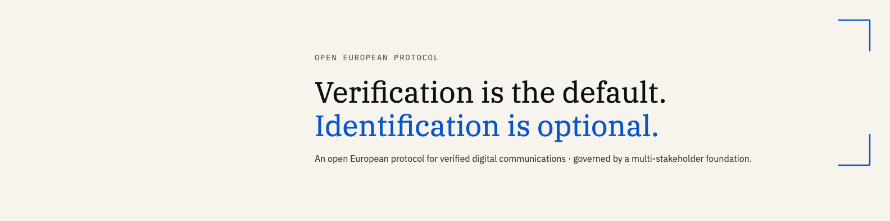

A square avatar (used in feeds and profile circles), a favicon (browser tab), a 1280×640 GitHub social card (OpenGraph preview), and a 1584×396 LinkedIn org banner. Every mark derives from the existing logo paths — no glyphs were redrawn.
Two options. Both derive from the logo. The faithful "[TA]" reads as a logo fragment; the corner-mark variant is more graphic. Both shown at GitHub display sizes (40px) on the right, to verify they survive shrinking.

Faithful zoom-crop of the wordmark — vertical brackets framing the first two letters. Reads as a logo fragment; survives down to ~32px.

"TA" centered with asymmetric corner brackets (top-right + bottom-left). More graphic; the marks become decorative at small sizes.
SVG favicon scales; PNG fallbacks at 16, 32, and 180 (apple-touch). The single-letter "T" variant is the safest choice for the smallest sizes.

favicon 32
favicon 16
apple-touch 180 (shown @ 64)Opengraph preview shown whenever a TARIDE repository or org URL is shared. Also works for Twitter/X cards.

Hero banner on the TARIDE org page. Bottom-left is intentionally quiet — the org's avatar overlays there.

All marks live under assets/social/. SVG sources are editable; PNG renders are upload-ready.